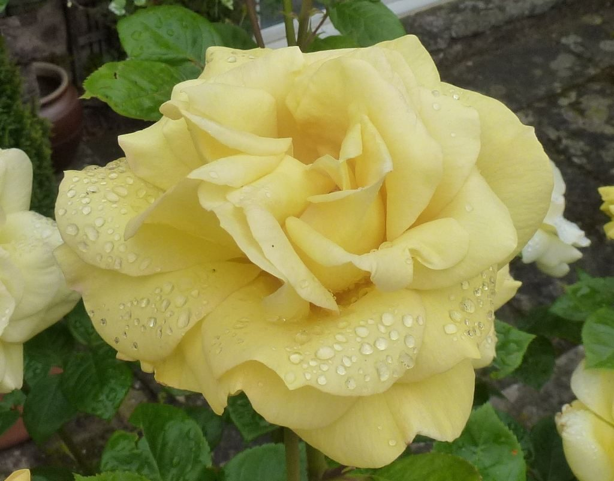

La Vie en Rose Bakery
ラヴィアンローズベーカリー
三重県津市のパン屋・ベーカリー「ラヴィアンローズベーカリー」のご案内ページです。営業時間やメニューなど、詳しいことは準備中。まずはInstagramをのぞいてみてください。
制作側の連想
ばら色のレンズ越しに
お店の名前の由来は分かりません。制作側は「ラヴィアンローズ」という響きから、ばら色の色つき眼鏡を連想しました。そこでこのサイトは、写真を丸いレンズに収め、ばら色のフィルターの濃さを変えて並べる作りにしています。制作側の連想で、お店の理念・由来とは無関係です。
フィルターの濃度つまみ
同じ一枚でも、ばら色の濃さで表情が変わる。
写真はお店のものではない、国外・撮影地不明のフリー素材です。色のないモノクロから、ばら色100%、そしてフィルターなしの素の写真まで、6段階で並べました。

0% 色なし
25%
50%
75%
100% ばら色
レンズなし
ご案内
お店のこと(確認できたものだけ)
| 所在地 | 〒514-1113 三重県津市久居野村町445-6 |
|---|---|
| 電話 | 059-256-6680 |
| 営業時間 | 準備中 |
| 定休日 | 準備中 |
| ご予約 | 準備中 |
| 駐車場 | 準備中 |
| SNS | Instagram @la_vie_en_rose.bakery |